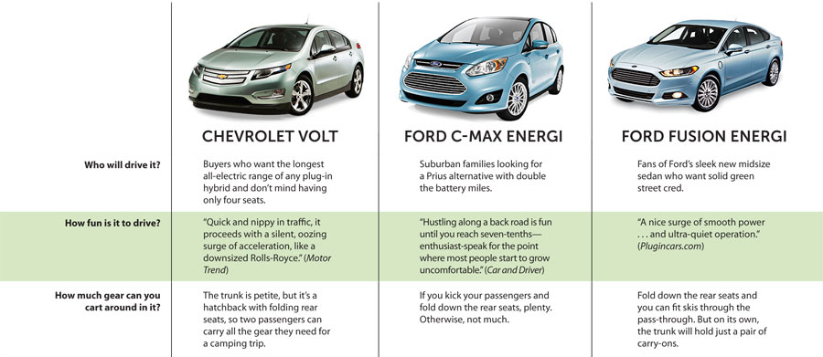
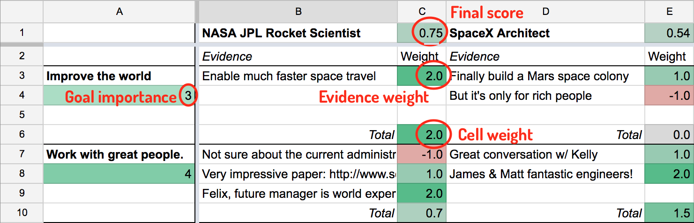
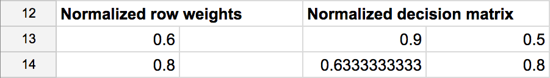
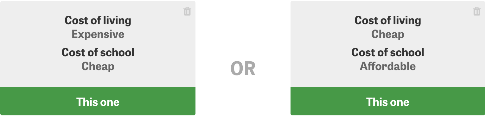

Tools for making better decisions
In a famous letter dating back to 1772, Benjamin Franklin described how he made decisions to a friend who was facing a dilemma. Franklin's method involved enumerating pros and cons of an argument, and then attempting to weigh one against the other to ultimately decide which of the two possibilities to pursue. Franklin wrote:
My way is to divide half a sheet of paper by a line into two columns; writing over the one Pro, and over the other Con. Then, during three or four days consideration, I put down under the different heads short hints of the different motives, ... I endeavor to estimate their respective weights.
This post attempts to modernize Franklin's method to attempt to overcome some of its shortcomings. Once we have gathered our thoughts in one place using this spreadsheet format, we can, with the help of others or using (aspirational) AI, assist the decision maker to help them combat common mistakes.
Modern tools for decision making
Franklin's method is explicitly qualitative: "...the weight of the reasons cannot be taken with the precision of algebraic quantities". Of course, this has not stopped many scientists and engineers from attempting to create quantitative tools that assist in decision making, called decision support systems. However these are mostly targeted at companies and not individuals. I tried a couple and failed to find one that was simple enough for my purposes.
As a result, it seems that the state of the art for individuals hasn't advanced much beyond Franklin's method. Product comparisons are one notable exception:

What if we could take product comparison charts, but make them a bit more quantitative, and then apply the technique to decision making?
Decision support spreadsheets
Simply stated, a topic is controversial (or a decision is difficult) if:
...there are good arguments on all sides. Good thinking involves balancing these arguments in a quantitative way, taking into account their relative strengths and weaknesses.
Inspired by this and other parts of Jon Baron's Thinking and Deciding, I made a spreadsheet attempting to codify what he describes as the "search-inference" process. Here's an example of an imaginary rocket scientist deciding between two job offers based on two goals, resulting in a 2x2 sheet:

Structurally, it works like this:
- Columns are possible courses of action (eg. NASA vs SpaceX).
- Rows are goals that you are trying to achieve (eg. improve the world, work with great people).
- Cells contain evidence pertaining to the associated possibility (row) and goal (column). In this case, the NASA job would improve the world by enabling much faster space travel.
There are also numbers involved:
- Each goal (row) has a number between 1 and 5 under it, corresponding to how important the goal is to you. The higher the number, the more important.
- Each piece of evidence (sub-cell) has a weight to the right between -2 and 2. Positive weights are pros, negative ones are cons.
A second sheet does all of the calculations. Each cell reduces to a weight in a decision matrix. Ultimately, each possibility (column) is given a score between 0 and 1. The recommended course of action is the possibility with the highest score. So the above 2x2 spreadsheet is converted into this decision matrix.

Then, given these weights, we do a simple calculation for each possibility (column): a normalized, weighted sum. So for the first possibility, we calculate:
(0.6 * 0.9 + 0.8 * 0.63) / (0.6 + 0.8) = 0.75
We do the same for each possibility, and the one with the highest resulting score is the "best" course of action.
Advantages of this method
Even geniuses like Franklin have a limited capacity for holding multiple thoughts in their heads at once. After laying out all of the arguments, Franklin wrote, "the whole lies before me, I think I can judge better". With all of the possibilities, goals and evidence in one place, you too can be like Franklin.
As for the specifics of my spreadsheet above, I can't claim that this method is optimal or even particularily good (though feedback on this would be appreciated). I created it as a placeholder, loosely inspired by Baron, Franklin, and other less rigorous approaches I've tried in the past. As it turns out, this method is essentially an example of Analytic Hierarchy Process (AHP).
Rather than sticking to Franklin's two column split, this spreadsheet is somewhat more complex, but there are some advantages:
- Most decisions aren't actually binary, and this is captured by having multiple columns.
- The method makes the notion of your goals and their relative importance explicit.
- Rather than pros and cons, we collect evidence that helps you decide about a goal and a possibility, which can then be graded numerically.
Despite the mechanistic appearance of this approach, Baron emphasizes the nonlinearity of the thinking process. As you collect evidence, you may uncover new possibilities and goals. With all of the evidence laid out, you can begin asking better questions, attempting to fight known failure modes in human thinking.
Reducing and increasing complexity
One significant challenge with the above approach is that of assigning weights. At the moment, my method involves coming up with two kinds of weights: goal weights (eg. how important is it for you improve the world, really?), and evidence weights (eg. is space travel really such a world improving thing?). This method is flexible enough to be easily simplified. For example:
- Evidence weights can be simplified by scoring pros as +1, and cons as -1.
- Goal weights can be simplified by binary ranking (eg. 1 is critical, 0 is nice-to-have).
A potentially better approach is known as PAPRIKA, which establishes weights based on a bunch of pair-wise comparisons. This might work well, and could actually be useful for capturing additional points of evidence. To get a feeling for it, there's a consumer-oriented decision support system called MeenyMo that does this. The process is quite tedious though, involving tens of comparisons like this:

The other downside of PAPRIKA is that it requires discrete categories (eg. cost of living: cheap, moderate, expensive).
Thinkos: inevitable irrationality
People aren't perfect, and neither is our thinking. Biases are sort of like thinking bugs that make our thoughts less rational. Irrational thinking leads to conclusions that are further from the actual objective truth. This is, as I hope you'll agree, undesirable.
Now that we're on the same page, Baron suggests that certain tactics that can help us make better decisions by improve thinking and reducing bias. These he broadly describes as "active open mindedness":
- Seek alternative possibilities. Anchoring bias tends to favor the first possibilities you generate, but it is entirely possible that you haven't searched enough.
- Formulate goals better. What are you actually trying to achieve? (eg. "protect walls from child's scribbling" vs. "prevent child from scribbling on walls").
- Look for counterevidence (eg. if there are strong pros, see if there are some cons too).
- Avoid belief overkill, which happens when there is a strong correlation between different goals (eg. most people are against capital punishment because it is both ineffective and immoral, whereas those for capital punishment are in favor because it's effective and moral. But why do both go together? They should be unrelated.)
- Allocate time that is proportionate to the importance of the decision. Franklin's method suggests to take "three or four days consideration" to capture evidence, and then "a day or two of further consideration" to let it all settle.
There are many other biases that can lead to bad decisions. The above serves as an example of some thinkos that can be reduced with external help: other people or software.
Summing up...
In some facets of life, it is impossible to apply this level of rigor. Quantifying your love for a person, for example, feels cold hearted and calculating, and I try to avoid it. Ironically, one of the most famous uses of Franklin's method was used by Charles Darwin in deciding whether or not to marry Emma Wedgwood. For what it's worth, the method appears to have worked, with Darwin emphatically scribbling "Marry, Marry, Marry, QED" after his calculations.
It is hard to fully discount the role of feeling. The quality of the rational decision making process depends heavily on your ability to formulate your true goals and possibilities, and collect all of the evidence and score it correctly. Gut feeling, (or as Kahneman says, System 1 thinking), can actually incorporate many arguments that one might not even be able to formulate, and yet those intangibles may end up being incredibly important.
And lastly, there is the question of practicality. Life is dynamic and circumstances can change quickly. For the spreadsheet-powered decision maker, this means constant revision, which can be complicated and time consuming. I experienced this first hand, attempting to use this method to help make a career move. Just when I thought I had established the teams that would have me, another one emerged, and I had to re-enter additional evidence, remove options that seemed appealing, but in retrospect were duds, and re-calibrate weights.
Thinking cannot be reduced to a spreadsheet, but when used in moderation, I hope that this method can be useful for some.